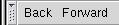
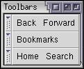
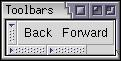
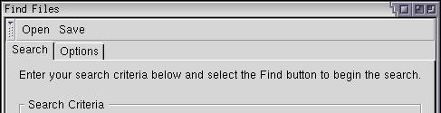

Toolbars
A toolbar is usually placed along the top of a window and contains a number of buttons that perform common functions. XUL has a method to create toolbars.
Adding a Toolbar
Like a number of elements, XUL toolbars are a type of box. Usually, a row of buttons would appear in the toolbar, but any element can be placed in a toolbar. For example, the Mozilla browser window contains a textbox that displays the page URL.
Toolbars may be placed on any side of the window, either horizontally or vertically. Of course you wouldn't normally put a textbox in a vertical toolbar. Actually, because toolbars are just boxes they can actually go anywhere you want, even in the middle of a window. Typically, however, a set of toolbars would appear along the top of a window. When more than one toolbar is placed next to each other, they are typically grouped together in something called a toolbox.
Along the left side of the toolbar is a little notch which, if clicked, will collapse the toolbar so that only the notch is visible. The notch is called a grippy. When mutliple toolbars are all placed in the same toolbox, the grippies will collapse into a single row. This shrinks the total amount of space that is used. Vertical toolbars have their grippies along their top edge. The user will usually collapse the toolbar if they want more space for the main window.
Here is a example of a simple toolbar inside a toolbox.
Example 5.1.1: Source View<toolbox>
<toolbar id="nav-toolbar">
<toolbarbutton label="Back"/>
<toolbarbutton label="Forward"/>
</toolbar>
</toolbox> This has created a toolbar containing two buttons, a Back button and a Forward button. The one toolbar has been placed inside the toolbox. This has involved four new tags, which are described here.
- toolboxA box that contains toolbars.
- toolbarA single toolbar that contains toolbar items such as buttons. Toolbars can be collapsed using the grippy on its left or top side.
- toolbarbuttonA button on a toolbar, which has all the same features of a regular button but is usually drawn differently.
- toolbargrippyThis element creates the notch that is used to collapse and expand the toolbar. You don't need to use it directly as it is added automatically.
The toolbar is the main element that creates the actual toolbar. Inside it are placed the individual toolbar items, usually buttons, but they can be other elements. The toolbar should have an id attribute or the grippy won't be able to collapse or expand the toolbar properly.
In the example above, only one toolbar was created. Multiple toolbars can be created just as easily by adding more toolbar elements after the first one.
The toolbox is a container for toolbars. In some applications, you will have several toolbars along the top of the window. You can put them all inside a toolbox.
You do not have to put toolbar elements inside a toolbox.
The grippies on the toolbox are created using another element, a toolbargrippy. It doesn't really make any sense to use it outside of a toolbar as it will have no special purpose as it will have nothing to collapse. However, you may wish to style it differently. You can hide the grippy by adding the grippyhidden attribute to the toolbar element, set to the value true.
 A toolbox with three toolbars in it:
 The same set of toolbars but two have been collapsed.
Let's add a toolbar to the find files dialog. We don't really need one but we'll add one anyway to demonstrate its use. Two buttons will be added, an Open button and a Save button. Presumably, they would allow the user to save search results and re-open them later.
<vbox flex="1">
<toolbox>
<toolbar id="findfiles-toolbar">
<toolbarbutton id="opensearch" label="Open"/>
<toolbarbutton id="savesearch" label="Save"/>
</toolbar>
</toolbox>
<tabbox>A toolbar with two buttons has been added here. In the image, you can see them appear horizontally along the top. The grippy also appears on the left side of the toolbar. Notice that the toolbar has been placed inside the vertical box just above the tabbox. This is because we need the vertical orientation so that the toolbar will appear above everything else.

(Next) Next, we'll find out how to add a menu bar to a window.
Examples: 5.1.1